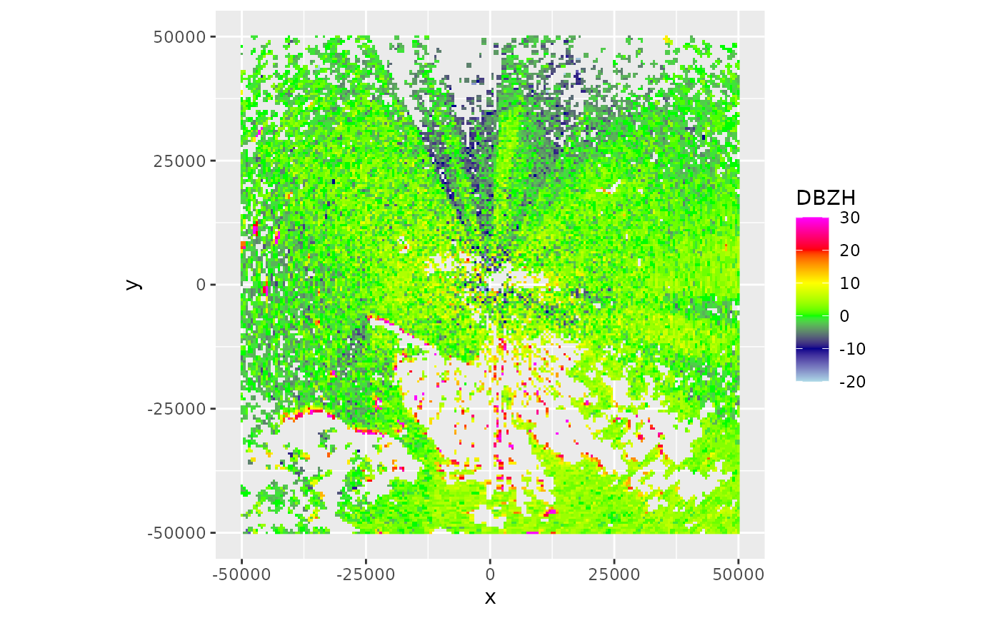
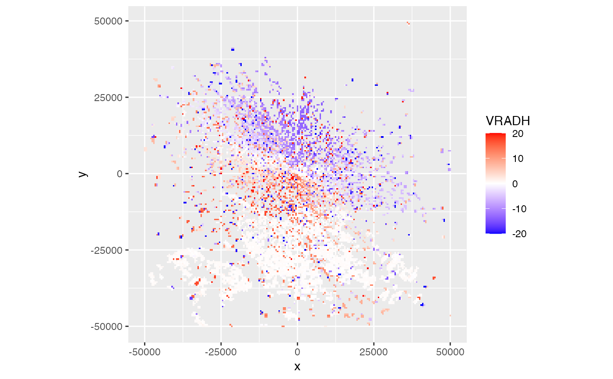
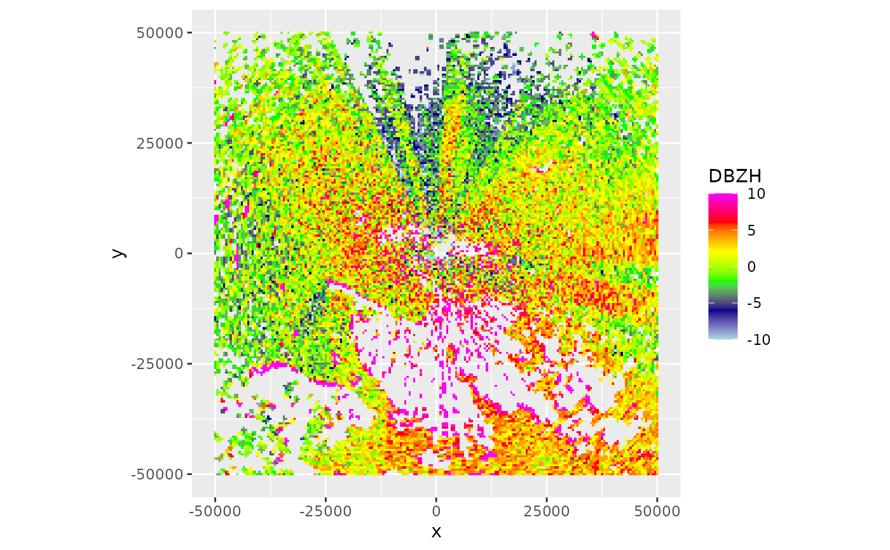
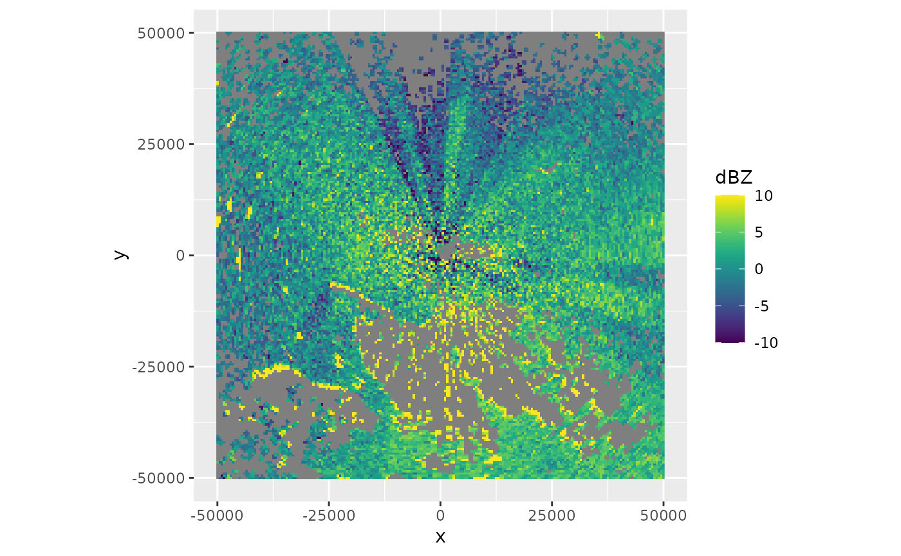

# S3 method for ppi plot( x, param, xlim, ylim, zlim = c(-20, 20), ratio = 1, na.value = "transparent", ... )
| x | An object of class |
|---|---|
| param | The scan parameter to plot, see details below. |
| xlim | Range of x values to plot. |
| ylim | Range of y values to plot. |
| zlim | The range of parameter values to plot. |
| ratio | Aspect ratio between x and y scale. |
| na.value | ggplot argument setting the plot color of NA values |
| ... | Arguments passed to low level ggplot function. |
Available scan parameters for plotting can by printed to screen
by summary(x). Commonly available parameters are:
DBZH", "DBZ"(Logged) reflectivity factor (dBZ)
TH", "T"(Logged) uncorrected reflectivity factor (dBZ)
VRADH", "VRAD"Radial velocity (m/s). Radial velocities towards the radar are negative, while radial velocities away from the radar are positive
RHOHV"Correlation coefficient (unitless). Correlation between vertically polarized and horizontally polarized reflectivity factor
PHIDP"Differential phase (degrees)
ZDR"(Logged) differential reflectivity (dB)
The scan parameters are named according to the OPERA data information model (ODIM), see Table 16 in the ODIM specification.
# load an example scan: data(example_scan) # print to screen the available scan parameters: summary(example_scan)#> Polar scan (class scan) #> #> parameters: VRADH DBZH ZDR RHOHV PHIDP #> elevation angle: 0.5 deg #> dims: 480 bins x 360 rays#> Warning: CRS object has comment, which is lost in output# change the range of reflectivities to plot, from -10 to 10 dBZ: plot(ppi, param = "DBZH", zlim = c(-10, 10))# change the scale name and colour scheme, using viridis colors: plot(ppi, param = "DBZH", zlim = c(-10, 10)) + viridis::scale_fill_viridis(name = "dBZ")#> #>